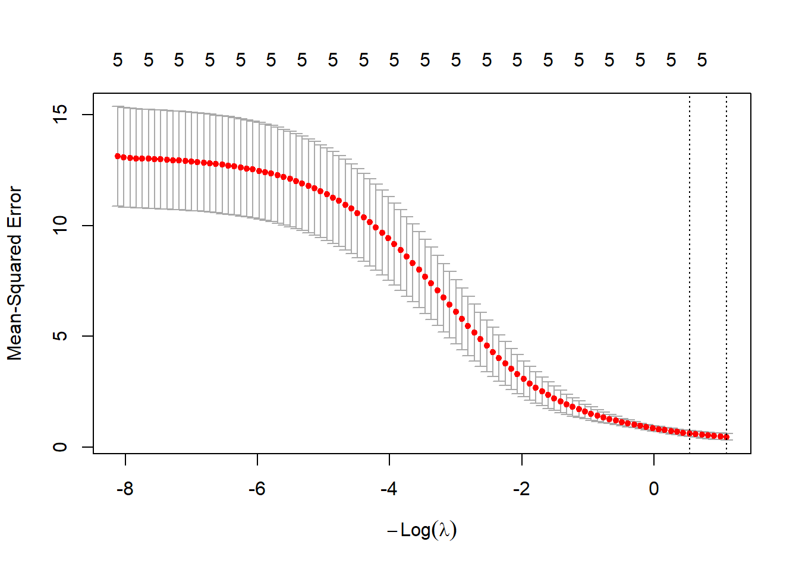
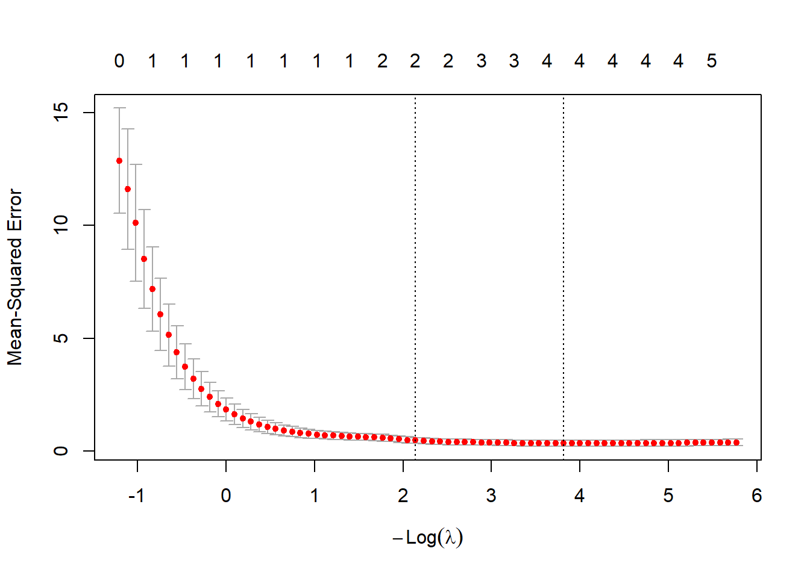
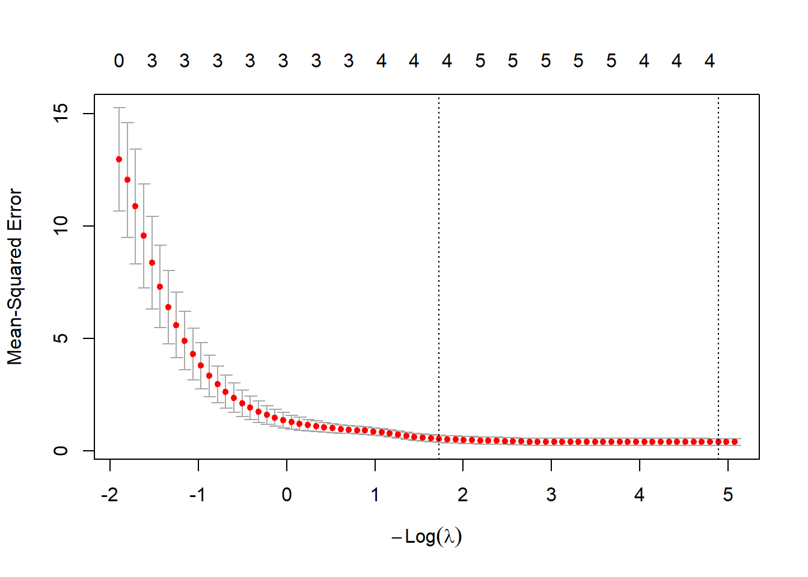

일반 선형회귀모형에서는 최소제곱법을 이용하여 회귀계수를 추정한다. 그러나 설명변수들 사이의 상관이 매우 강하거나 설명변수의 수가 관측값 수에 비해 많으면 최소제곱추정량이 불안정해질 수 있다. 회귀계수의 표준오차가 커지고, 계수의 부호가 예상과 다르게 바뀌거나, 자료가 조금만 바뀌어도 추정값이 크게 달라질 수 있다.
능형회귀와 LASSO는 이러한 문제를 완화하기 위해 회귀계수의 크기에 벌점(penalty)을 부여하는 방법이다. 이 방법들은 회귀계수를 의도적으로 0에 가깝게 줄이는 대신 추정의 안정성과 예측 성능을 높이고자 한다. 이러한 접근을 규제회귀(regularized regression) 또는 penalized regression이라고 한다.
그러나 설명변수들 사이에 강한 다중공선성이 있으면 \(\mathbf{X}'\mathbf{X}\)가 거의 특이행렬에 가까워지고, 최소제곱추정량의 분산이 커진다. 이 경우 회귀계수는 자료의 작은 변화에도 크게 흔들릴 수 있다. 규제회귀는 잔차제곱합뿐 아니라 회귀계수의 크기에도 벌점을 부여하여 계수를 안정적으로 추정한다.
ridge는 상관된 변수들의 계수를 함께 줄이는 경향이 있다. 반면 LASSO는 상관된 변수 중 일부만 선택하고 나머지를 0으로 만들 수 있다. 따라서 강한 상관을 가진 변수들이 여러 개 있는 경우에는 LASSO 결과가 불안정할 수 있으며, 이때 elastic net을 고려할 수 있다.
규제회귀에서 \(\lambda\)는 모형 복잡도를 결정하는 핵심 tuning parameter이다. \(\lambda\)가 작으면 일반 최소제곱모형에 가까워지고, \(\lambda\)가 크면 회귀계수가 강하게 0에 가까워진다. 따라서 적절한 \(\lambda\)를 선택해야 한다.
가장 널리 사용되는 방법은 교차검증(cross-validation)이다. 자료를 여러 fold로 나누고, 각 \(\lambda\) 값에 대해 검증자료에서의 예측오차를 계산한 뒤 평균 예측오차가 가장 작은 \(\lambda\)를 선택한다.
glmnet의 cv.glmnet()은 보통 다음 두 값을 제공한다.
lambda.min: 교차검증 오차가 가장 작은 \(\lambda\)
lambda.1se: 최소 오차로부터 1 표준오차 이내에 있는 가장 큰 \(\lambda\)
lambda.min은 예측오차를 최소화하는 데 초점을 둔다. lambda.1se는 조금 더 단순하고 안정적인 모형을 선택하려는 기준이다. 강의나 실무 보고서에서는 두 결과를 모두 확인하고, 예측 성능과 모형 해석 가능성을 함께 고려하는 것이 좋다.
10.5 능형트레이스와 계수 경로
ridge와 LASSO에서는 \(\lambda\)가 변할 때 회귀계수가 어떻게 변하는지 확인할 수 있다. 이를 계수 경로(coefficient path)라고 한다. ridge에서는 \(\lambda\)가 증가할수록 계수들이 점진적으로 0에 가까워진다. LASSO에서는 \(\lambda\)가 증가할수록 일부 계수가 정확히 0이 된다.
이러한 그림은 다음을 이해하는 데 도움이 된다.
어떤 변수가 큰 \(\lambda\)에서도 남아 있는가?
어떤 변수의 계수가 빠르게 0으로 축소되는가?
상관된 변수들의 계수가 함께 움직이는가?
선택된 \(\lambda\)에서 어떤 변수들이 모형에 포함되는가?
10.6 R 활용 능형회귀 및 LASSO 회귀분석
이 절에서는 longley 자료를 이용하여 일반 선형회귀, ridge, LASSO를 비교한다. longley 자료는 설명변수들 사이의 상관이 강한 예제로 자주 사용된다.
GNP.deflator GNP Unemployed Armed.Forces
Min. : 83.00 Min. :234.3 Min. :187.0 Min. :145.6
1st Qu.: 94.53 1st Qu.:317.9 1st Qu.:234.8 1st Qu.:229.8
Median :100.60 Median :381.4 Median :314.4 Median :271.8
Mean :101.68 Mean :387.7 Mean :319.3 Mean :260.7
3rd Qu.:111.25 3rd Qu.:454.1 3rd Qu.:384.2 3rd Qu.:306.1
Max. :116.90 Max. :554.9 Max. :480.6 Max. :359.4
Population Year Employed
Min. :107.6 Min. :1947 Min. :60.17
1st Qu.:111.8 1st Qu.:1951 1st Qu.:62.71
Median :116.8 Median :1954 Median :65.50
Mean :117.4 Mean :1954 Mean :65.32
3rd Qu.:122.3 3rd Qu.:1958 3rd Qu.:68.29
Max. :130.1 Max. :1962 Max. :70.55
if (requireNamespace("glmnet", quietly =TRUE)) {set.seed(2026) cv_ridge <- glmnet::cv.glmnet(x = x,y = y,alpha =0,nfolds =5,standardize =TRUE )plot(cv_ridge) cv_ridge$lambda.min cv_ridge$lambda.1secoef(cv_ridge, s ="lambda.min")coef(cv_ridge, s ="lambda.1se")} else {message("Package 'glmnet' is required for ridge regression with cv.glmnet().")}

6 x 1 sparse Matrix of class "dgCMatrix"
lambda.1se
(Intercept) 32.801013644
GNP.deflator 0.102829090
GNP 0.012630643
Unemployed -0.003722564
Armed.Forces 0.000945123
Population 0.154190645
ridge에서는 모든 회귀계수가 일반적으로 0에 가까워질 뿐, 정확히 0이 되지는 않는다. 따라서 ridge는 변수선택보다는 다중공선성 완화와 예측 안정화에 초점을 둔다.
LASSO: alpha = 1
if (requireNamespace("glmnet", quietly =TRUE)) {set.seed(2026) cv_lasso <- glmnet::cv.glmnet(x = x,y = y,alpha =1,nfolds =5,standardize =TRUE )plot(cv_lasso) cv_lasso$lambda.min cv_lasso$lambda.1secoef(cv_lasso, s ="lambda.min")coef(cv_lasso, s ="lambda.1se")} else {message("Package 'glmnet' is required for LASSO regression with cv.glmnet().")}

6 x 1 sparse Matrix of class "dgCMatrix"
lambda.1se
(Intercept) 52.53050757
GNP.deflator .
GNP 0.03475575
Unemployed -0.00215531
Armed.Forces .
Population .
LASSO에서는 일부 계수가 정확히 0이 될 수 있다. 계수가 0인 변수는 선택되지 않은 변수로 볼 수 있다. 다만 LASSO의 변수선택 결과는 자료 분할이나 상관된 변수 구조에 따라 달라질 수 있으므로, 선택된 변수만을 기계적으로 해석해서는 안 된다.
Elastic net: 0 < alpha < 1
if (requireNamespace("glmnet", quietly =TRUE)) {set.seed(2026) cv_enet <- glmnet::cv.glmnet(x = x,y = y,alpha =0.5,nfolds =5,standardize =TRUE )plot(cv_enet) cv_enet$lambda.mincoef(cv_enet, s ="lambda.min")} else {message("Package 'glmnet' is required for elastic net regression with cv.glmnet().")}

6 x 1 sparse Matrix of class "dgCMatrix"
lambda.min
(Intercept) 49.056598366
GNP.deflator 0.073030522
GNP 0.033196457
Unemployed -0.008331657
Armed.Forces -0.005275236
Population .
elastic net은 ridge와 LASSO의 중간 형태이다. 상관된 설명변수들이 여러 개 있을 때 LASSO보다 더 안정적인 변수선택 결과를 줄 수 있다.
10.7 예측 성능 비교 예제
규제회귀는 특히 예측 목적에서 자주 사용된다. 아래 예제에서는 훈련자료와 검증자료를 나누어 OLS, ridge, LASSO의 예측오차를 비교한다. longley 자료는 표본 수가 매우 작으므로 결과는 예시로만 해석해야 한다.